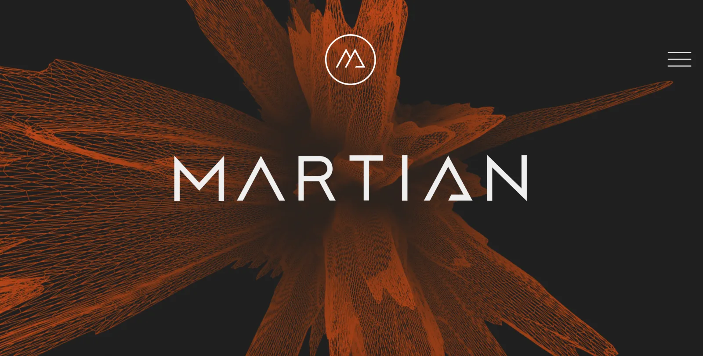
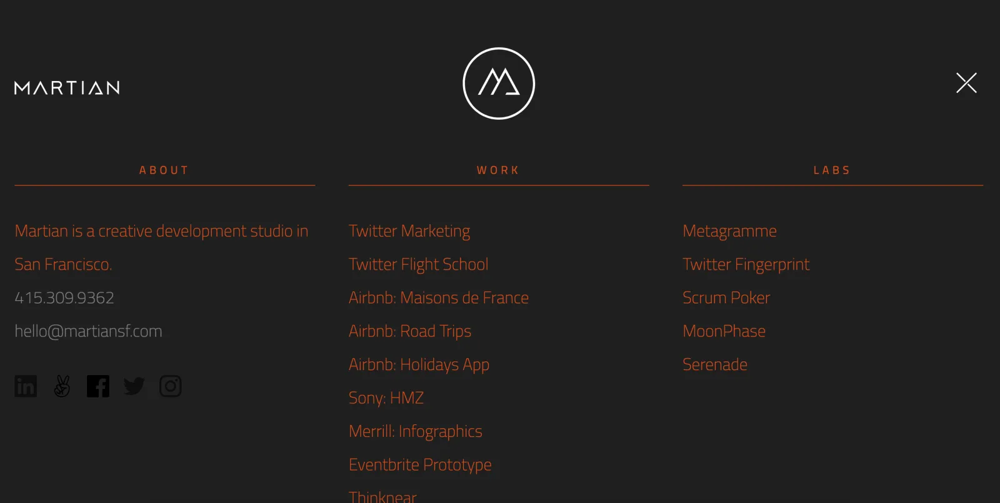
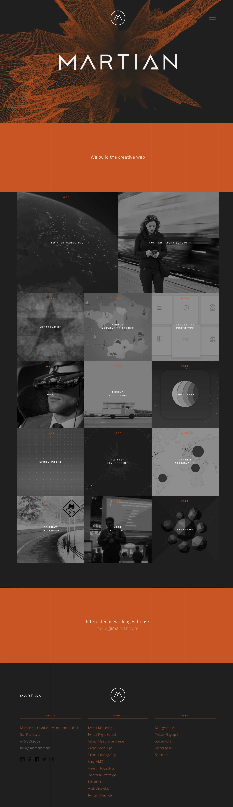
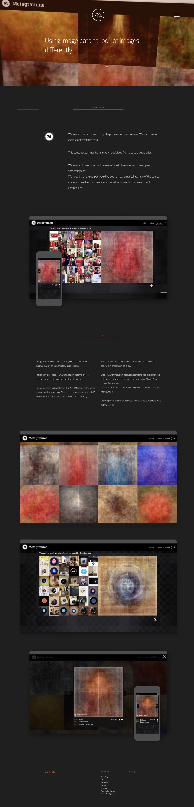

Martian Portfolio Site
Portfolio Site for the Creative Agency that I started and ran for 4 years. I concepted this site and did the wireframes as well as interaction design.


An attempt to flatten the navigational hierarchy as much as possible.

Screenshot of the entire home page.

Screenshot of a project detail page.